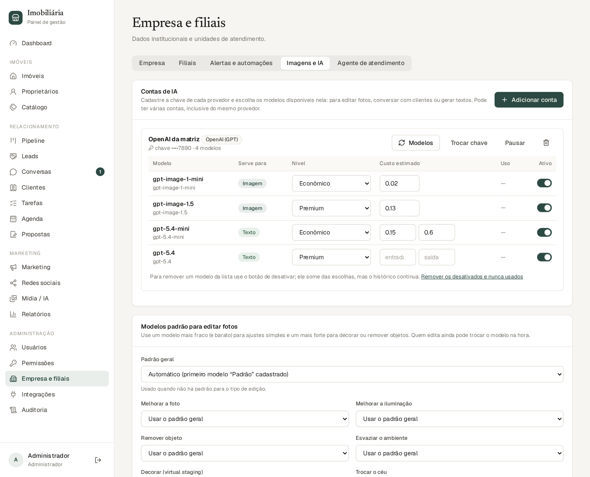
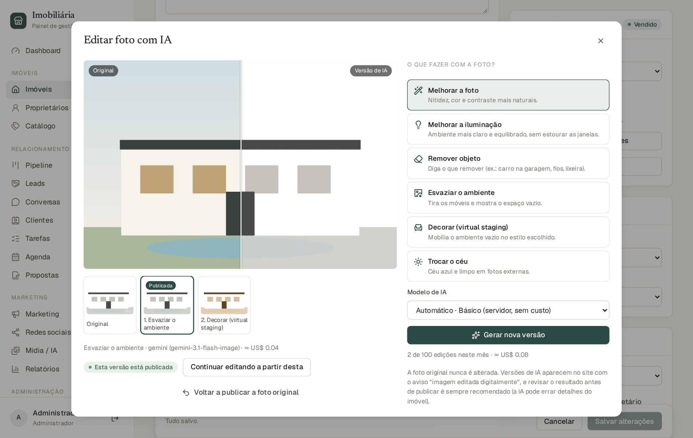
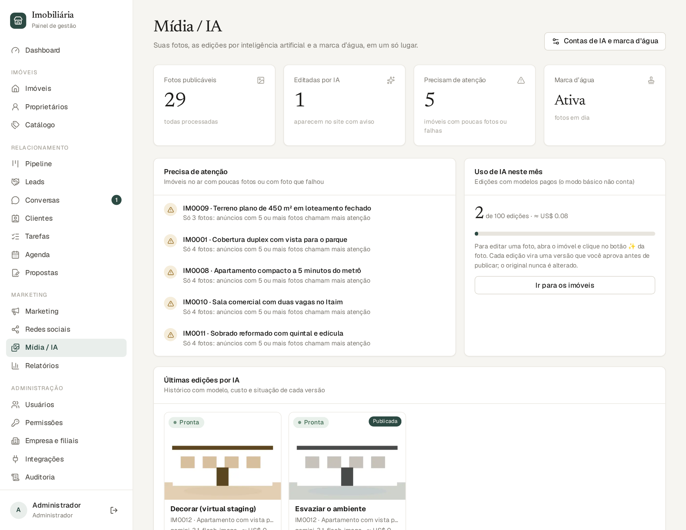
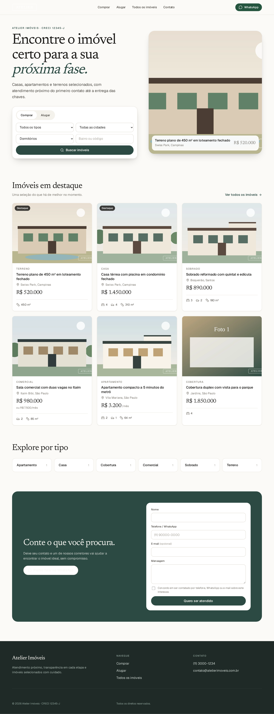
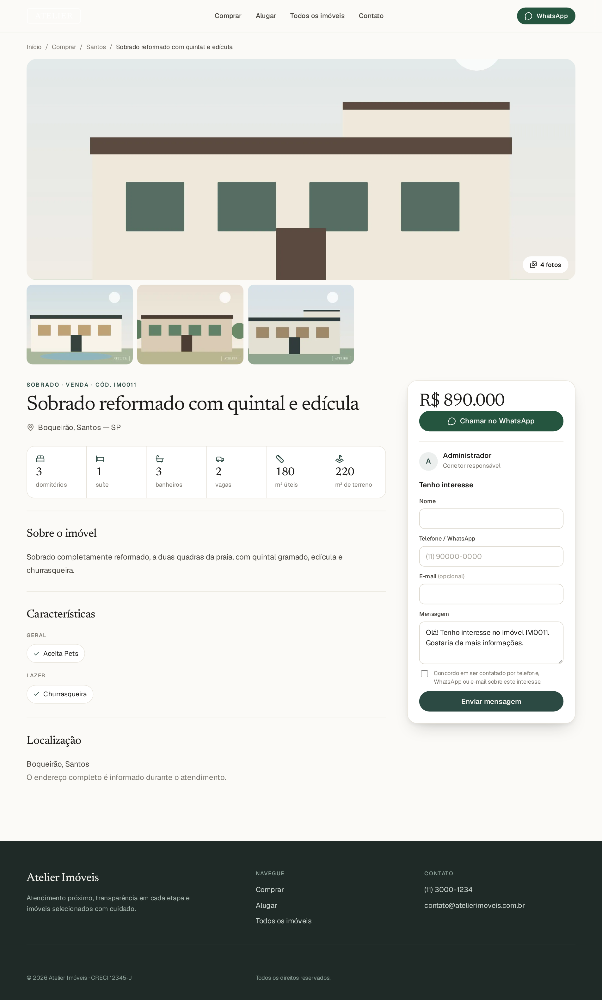

Capítulo 5Fotos: marca d’água e inteligência artificial
Este capítulo trata de três recursos que valorizam as fotos dos imóveis: a marca d’água com a logo da imobiliária, a edição por inteligência artificial (IA) e o painel Mídia / IA, que junta tudo.
5.1 Marca d’água com a logo da imobiliária
O sistema pode carimbar a logo da imobiliária nas fotos publicadas. Isso protege suas fotos de uso indevido e reforça a marca. A foto original nunca recebe a marca: ela só é aplicada na versão publicada (no site, nas redes sociais e nas miniaturas).
Quem configura: administrador. Caminho: Empresa e filiais → aba Imagens e IA → “Marca d’água nas fotos”.
Clique em Enviar logo e escolha o arquivo. O ideal é um PNG com fundo transparente; também aceita JPG, WebP e SVG (até 5 MB, mínimo de 64 px).
Marque Carimbar a logo nas fotos publicadas.
Escolha a posição (cantos ou centro) clicando no quadradinho correspondente.
Ajuste com as barras: Tamanho (percentual da largura da foto), Opacidade (quanto a logo é transparente) e Distância da borda. A pré-visualização mostra o resultado sobre uma foto do seu catálogo.
Clique em Salvar.
Para valer também nas fotos que já estavam publicadas, clique em Aplicar nas fotos existentes. O sistema atualiza uma por uma, sem tirar nenhuma do ar. Fotos novas já saem com a marca.

Aba “Imagens e IA”: contas de IA, modelos padrão e marca d’água.
DicasUse uma logo clara ou branca com contorno se suas fotos forem escuras, e o contrário se forem claras. Prefira opacidade entre 60% e 85% e tamanho entre 12% e 20%: aparece sem atrapalhar. Para tirar a marca, desmarque a opção (ou remova a logo), salve e clique em “Aplicar nas fotos existentes”.
5.2 Editando fotos com IA
A IA pode melhorar uma foto, corrigir a luz, remover objetos, esvaziar um ambiente, mobiliá-lo virtualmente ou trocar o céu. Tudo é feito sem nunca substituir a foto original: cada edição vira uma versão nova, e você escolhe qual delas publicar.
Edição
O que faz
Disponível no modo básico?
Melhorar a foto
Mais nitidez, cor e contraste naturais.
Sim
Melhorar a iluminação
Ambiente mais claro e equilibrado, sem estourar as janelas.
Sim
Remover objeto
Você descreve o que tirar (carro na garagem, fios, lixeira…).
Não (precisa de IA)
Esvaziar o ambiente
Tira os móveis e mostra o espaço vazio.
Não
Decorar (virtual staging)
Mobília o ambiente vazio em um estilo: moderno, clássico, escandinavo, industrial, minimalista ou rústico.
Não
Trocar o céu
Céu azul e limpo em fotos externas.
Não
O modo básico roda no próprio servidor, sem custo e sem configuração. As demais edições usam um modelo de IA de um provedor (OpenAI, Google Gemini…) cadastrado pelo administrador (seção 5.4); cada edição paga tem um custo pequeno, mostrado em dólares.
Quem edita: perfis com a permissão “Editar mídias com IA” (administrador, gerente e marketing, por padrão).
Passo a passo
Abra o imóvel e vá ao bloco Fotos e vídeos.
Passe o mouse sobre a foto e clique no botão ✨ (Editar com IA). Abre o estúdio de edição.
Escolha o que fazer na coluna da direita. Em “Remover objeto”, descreva o que tirar; em “Decorar”, escolha o estilo.
Se houver mais de um modelo de IA, escolha o modelo (ou deixe “Automático”). Modelos Premium costumam dar resultado melhor; Econômico custa menos.
Clique em Gerar nova versão e aguarde (pode levar até 1 minuto).
Compare o antes e depois arrastando a barra sobre a imagem.
Gostou? Clique em Publicar esta versão. Não gostou? Gere outra, ou Descartar.

Estúdio de edição por IA: comparação antes/depois, versões e opções de edição.
Versões, aprovação e volta ao original
As versões aparecem em miniaturas abaixo da imagem: Original, 1, 2, 3… A que está publicada tem a etiqueta Publicada.
Continuar editando a partir desta: usa uma versão como ponto de partida da próxima edição (por exemplo, esvaziar o ambiente e depois decorá-lo).
Voltar a publicar a foto original: desfaz a publicação da versão de IA a qualquer momento. As versões continuam no histórico.
Só é possível descartar versões que não estão publicadas nem serviram de base para outras.
Apenas uma edição por foto acontece de cada vez.
Transparência e cuidadoFotos com versão de IA publicada aparecem no site com o aviso “Imagem editada digitalmente”. Revise sempre o resultado antes de publicar: a IA pode errar detalhes (uma janela a mais, um móvel estranho). Não use a IA para esconder defeitos reais do imóvel ou mostrar algo que ele não tem; isso pode gerar problemas com o cliente e com a lei.
5.3 O painel Mídia / IA
O item Mídia / IA do menu é a central de fotos. Ele não substitui a galeria de cada imóvel (onde a edição acontece), mas mostra o panorama e o que precisa de atenção.

Painel Mídia / IA.
Cartões: fotos publicáveis, quantas foram editadas por IA, quantos imóveis precisam de atenção e o estado da marca d’água.
Precisa de atenção: imóveis publicados sem foto ou com menos de 5 fotos, e fotos que falharam. Clique para abrir o imóvel.
Uso de IA neste mês: edições feitas com modelos pagos, limite mensal e custo estimado.
Últimas edições por IA: histórico com a imagem gerada, o tipo de edição, o modelo, o custo, quem pediu e se está publicada.
5.4 Contas de IA (para administradores)
Para usar edições além do modo básico, e também o agente de atendimento (capítulo 10), o administrador cadastra as contas de IA da imobiliária. Cada conta é uma “chave” (API key) que você obtém no site do provedor. Você pode cadastrar várias contas, inclusive do mesmo provedor.
Provedor
Serve para
Onde conseguir a chave
OpenAI (GPT)
Texto (agente) e edição de imagens
platform.openai.com → API keys
Google Gemini
Texto (agente) e edição de imagens
aistudio.google.com → Get API key
Anthropic (Claude)
Somente texto (agente)
console.anthropic.com → API keys
Groq
Somente texto (agente); respostas rápidas e baratas
console.groq.com → API Keys
Adicionando uma conta
Em Empresa e filiais → Imagens e IA → Contas de IA, clique em Adicionar conta.
Escolha o provedor, dê um nome à conta (por exemplo, “OpenAI da matriz”) e cole a chave. Clique em Buscar modelos.
O sistema consulta o provedor e lista os modelos que a chave permite usar, separados por finalidade: editar imagens, gerar texto e conversar e outros.
Marque os que deseja usar. Para cada um, ajuste o nível (Econômico, Padrão ou Premium) e o custo estimado (por imagem, ou por milhão de tokens nos modelos de texto; confira na tabela de preços do provedor).
Clique em Salvar conta.
NíveisUse Econômico para tarefas simples (ajustar uma foto, responder perguntas comuns) e Premium onde a qualidade importa (decorar um ambiente, conversas mais delicadas). O nível é só uma etiqueta para você organizar: ajuste como preferir.
Gerenciando contas e modelos
Modelos: busca modelos novos que o provedor lançou depois.
Trocar chave: substitui a chave (ela é validada antes de salvar). A chave nunca é exibida de volta: só aparecem os quatro últimos caracteres.
Pausar / Ativar: desliga uma conta sem apagá-la.
Em cada modelo, o interruptor Ativo liga ou desliga; você pode editar nível e custo a qualquer momento. A coluna Uso mostra quantas vezes foi usado.
Modelos padrão e limite mensal
No cartão Modelos padrão para editar fotos, defina um modelo padrão geral e, se quiser, um diferente para cada tipo de edição (por exemplo, econômico para “Melhorar a foto” e premium para “Decorar”). Defina também o limite de edições pagas por mês: ao chegar nele, o sistema para de aceitar novas edições pagas (o modo básico não conta). O consumo do mês e o custo estimado aparecem ali.
CustosOs valores mostrados são estimativas. Quem cobra é o provedor da IA, na conta que você criou lá; acompanhe a fatura dele. Mantenha um limite mensal coerente com o seu orçamento.
Capítulo 6O site público
O site é a vitrine da imobiliária: quem entra nele vê os imóveis que você publicou. Você não precisa editar o site: ele se atualiza sozinho com o que está no painel (dados da empresa, logo, cores e imóveis publicados).

Página inicial do site.
6.1 O que o visitante encontra
Início: imóveis em destaque e atalhos para comprar e alugar.
Comprar, Alugar e Todos os imóveis: listas com filtros por tipo, cidade, bairro, preço, dormitórios, vagas, área e características, com ordenação por mais recentes ou por preço.
Página do imóvel: galeria de fotos (abre em tela cheia), valores, dados do imóvel, características, localização (bairro e cidade), botão WhatsApp e formulário “Tenho interesse”. Mostra também imóveis parecidos.
Contato: telefone, e-mail e WhatsApp da imobiliária, tirados do cadastro da empresa.

Página de um imóvel no site (com marca d’água nas miniaturas).
6.2 O que acontece quando o cliente entra em contato
Formulário: o visitante informa nome, telefone (com DDD), e-mail (opcional) e uma mensagem, e concorda em ser contatado. Isso cria um lead automaticamente, já ligado ao imóvel, com um corretor responsável e uma tarefa de primeiro contato.
Botão do WhatsApp: abre a conversa com uma mensagem pronta contendo o código do imóvel. Quando a pessoa escreve, o sistema reconhece o código, cria o lead e liga a conversa ao imóvel.
Origem do anúncio: se o visitante veio de um anúncio com identificação de campanha, o sistema guarda essa origem no lead (veja o capítulo 11).
6.3 Por que um imóvel não aparece no site?
Confira, nesta ordem: (1) ele está publicado? (2) o status é Disponível ou Reservado? (rascunhos, inativos e arquivados não aparecem; vendidos e alugados saem das listas, mas quem tem o link vê um aviso); (3) tem ao menos uma foto processada? Depois de publicar, o site pode levar até um minuto para refletir a mudança.
PrivacidadeSe a imobiliária usa o Pixel da Meta, o site mostra um aviso de cookies. O visitante pode aceitar ou recusar; sem aceite, nada é enviado à Meta. O endereço completo do imóvel só aparece se você marcar essa opção na ficha; por padrão, mostra apenas bairro e cidade.